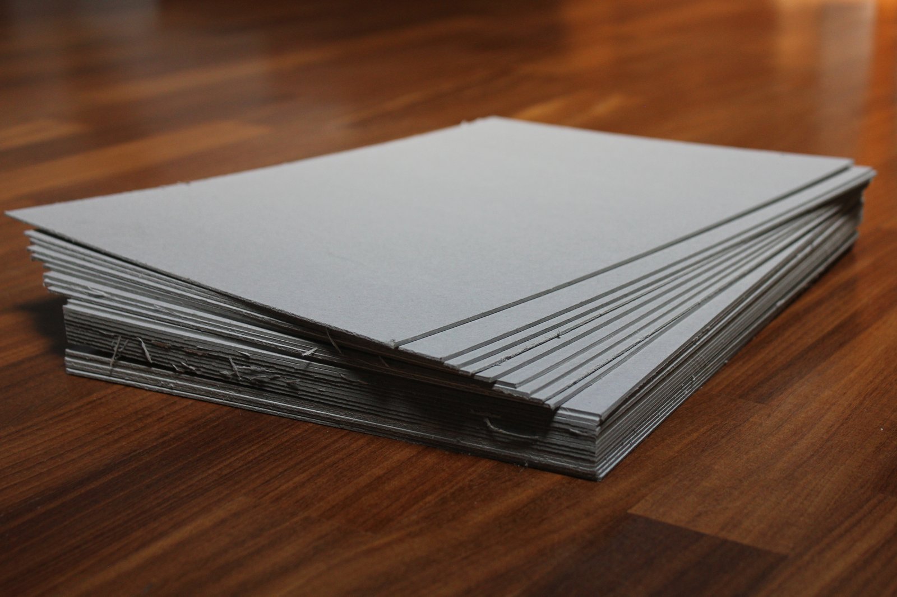
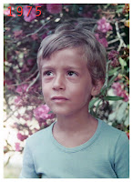
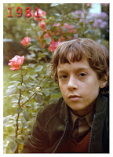
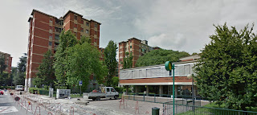
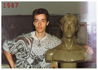

Home
Shop
Portfolio
About
Archive
Fan art
Shop
Tutorials
Art Prints
Portfolio
Paintings
Speed Drawing
Illustration
Oil Reproductions
Cartoons
About
Bio
Education
Exhibitions
My Tools
Archive
2021
2020
2019
2018
2017
2016
2015
2014
2013

My Schools

Primary School via Luigi Scrosati 3 Milano
I started to get interested in drawing while attending elementary school, 1975-1980. In those years I drew especially comics and cartoon characters, using markers.


Lower Secondary School "Dante Alighieri" via Luigi Scrosati 4 Milano
I attended this school from 1980 to 1983. At 11 years old I participated in a contest on TV with a caricature of Gaetano Scirea, an Italian football player, and I won a Sinclair ZX81 computer.
